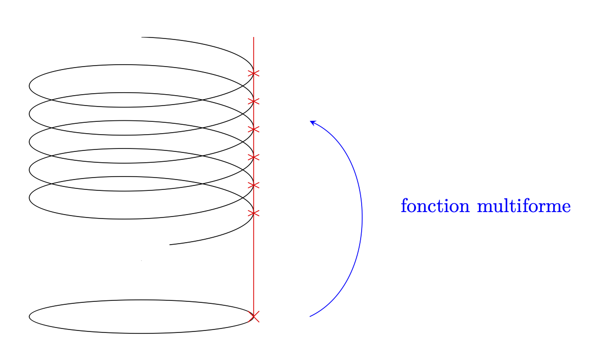

1.2. Fonctions complexes usuelles#
\(\newcommand{\R}{\mathbb{R}}\) \(\newcommand{\Q}{\mathbb{Q}}\) \(\newcommand{\N}{\mathbb{N}}\) \(\newcommand{\C}{\mathbb{C}}\) \(\newcommand{\Z}{\mathbb{Z}}\)
1.2.1. Applications algébriques#
Que ce soit grâce à la nature géométrique du plan complexe ou au fait que ce soit un corps, il est possible de définir de nombreuses applications élémentaires, correspondantes aux opérations élémentaires. Sans nous attarder dessus, rappelons la définition des plus courantes :
1.2.2. Séries entières#
Definition 1.6 (Série entière)
On appelle série entière (au point \(a\in \C\)) toute fonction \(f\) de la forme :
en tout point en lequel \(f\) est bien posée et pour une certaine suite \(a_n\in \C\).
Si cette relation n’est vraie que sur un ouvert \(\Omega\ni a\), on dira que f est développable en série entière sur \(\Omega\). Lorsque cela est le cas, la suite des \(a_n\) est unique.
Example 1.3
Les polynômes sont des séries entières, pour lesquelles \(a_n\) est nul à partir d’un certain rang.
Peut-être plus intéressant, la fonction \(z\mapsto \frac{1}{1-z}\) est développable en série entière sur \(B(0,1)\) en 0. Rappelons que pour \(z\neq 1\),
Prenons un \(z\) tel que \(|z|<1\) et notons qu’alors
(Pour \(|z|\geq1\), la série diverge, puisque le terme général ne tend pas vers 0).
Soit \((a_n)\in \C^\N\) une suite de nombres complexes.
On appelle rayon de convergence de la série associé le nombre \(R\) définit par
On appelle disque de convergence de la série entière en \(a\) le disque \(B(a,R)\).
Theorem 1.1 (Caractérisation de la convergence)
Soit \((a_n)\in \C^\N\) une suite de nombres complexes.
On pose
Alors le rayon de convergence de la série associé à \((a_n)\) est \(R_0\).
Plus précisément, pour tout \(a\), la série entière \({\displaystyle \sum_{n=0}^\infty a_n(z-a)^n}\) :
converge absolument pour \(z\in B(a,R_0)\),
diverge pour \(|z-a|>R_0\),
converge normalement sur tous compacts de \(B(a,R_0)\).
Proof. Pour montrer que \(R_0\) est bien le rayon de convergence, il suffit de montrer les trois points du théorème.
Quitte à translater en posant \(w=z-a\), on peut supposer pour la démonstration que \(a=0\).
Considérons \(r<R_0\) et \(r<R<R_0\). Alors comme \(\frac{1}{R}>\frac{1}{R_0}\), alors par définition de la limite supérieur, \(|a_n|^{1/n} <\frac{1}{R}\) à partir d’un certain rang, et donc que \(a_n<\frac{1}{R^n}\) à partir d’un certain rang. Soit alors \(z\in B(0,r)\), on vérifie que \(|a_n z^n|=O(\frac{r^n}{R^n})\). Par théorème de comparaison, la série entière converge absolument, et même normalement sur \(\overline{B}(0,r)\), ce qui prouve les points 1 et 3.
Maintenant, soit \(z\) tel que \(|z|>R_0\) et considérons. Comme précédemment, \(|a_n|>\frac{1}{|z|^{n}}\) à partir d’un certain rang, et donc \(|a_nz^n|>1\) à partir d’un certain rang. Ainsi, la série entière diverge grossièrement, ce qui prouve le point 2.
Remark 1.4
Pour \(|z|=R\), on ne peut rien dire en général. Ainsi, malgré le fait que les trois séries suivantes aient un rayon de convergence égal à 1, on a que :
\(\sum z^n\) diverge quand \(|z|=1\),
\(\sum \frac{z^n}{n}\) diverge pour \(z=1\) et converge pour \(z=-1\) (par critère des séries alternées),
\(\sum \frac{z^n}{n^2}\) converge absolument en \(|z|=1\).
Exercise 1.5
Determiner le rayone de convergence de la série entière \(\sum (\frac{n+1}{n})^{n^2} z^n\).
Solution
Comme \(|a_n|^{1/n}=(\frac{n+1}{n})^n=(1+\frac{1}{n})^n\to e\), le théorème précédent nous assure que le rayon de convergence de la série entière est égale à \(e^{-1}\).
Dans le cadre des séries entières, si \(\lim\limits_{n\to \infty} |\frac{u_{n+1}}{u_n}|=L\) existe, alors le rayon de convergence de la série est \(R=\frac{1}{L}\) (critère de convergence des séries de D’Alembert).
Proposition 1.6
Considérons deux fonctions développables en série entières \(f(z)=\sum_{n=0}^\infty a_n(z-a)^n\) et \(g(z)=\sum_{n=0}^\infty b_n(z-b)^n\) de rayon de convergence respectif \(R_1\) et \(R_2\) strictement positif. Alors
Si \(a=b=z_0\), alors \(f+g\) est développable en série entière avec \((f+g)(z)=\sum_{n=0}^\infty (a_n+b_n)(z-z_0)^n\) et un rayon de convergence \(R\geq \min(R_1,R_2)\).
Si \(a=b=z_0\), alors \(f\times g\) est développable en série entière avec \((f\times g)(z)=\sum_{n=0}^\infty\left(\sum_{k=0}^n a_kb_{n-k}\right)(z-z_0)^n\) et un rayon de convergence \(R\geq \min(R_1,R_2)\).
Si \(a=g(b)\), alors \(f\circ g\) est développable en série entière avec un rayon de convergence strictement positif.
Proof. - Pour le premier point, il s’agit de la convergence de la somme de série.
Pour le deuxième, il s’agit du produit de Cauchy de deux séries, les séries entières convergeant absolument sur le disque ouvert de convergence.
Supposons que \(R_1,R_2>0\) pour le dernier point. Comme \(g(b)=a\), on peut sans perte de généralité supposer que \(a=b=0\) et \(g(0)=0\). En travaillant dans \([0,+\infty]\), on a avec le théorème de Tonelli que
(comme \(b_0=0\), la somme intérieure est en fait une somme finie).
Or, \(R_2>0\) implique que la série \(\sum_{i=1}^\infty b_iz^i\) est normalement convergente dans le disque \(B(0,\frac{R_2}{2})\) et donc que la fonction \(z\mapsto \sum_{i=1}^{+\infty} |b_i|z^i\) soit continue comme limite uniforme de fonctions continues (car polynomiale).
En particulier, il existe \(r<R_2\) tel que \((\sum_{i=0}^\infty |b_i|\times r^i=\sum_{i=1}^{+\infty} |b_i|r^i<R_1\). Pour un tel \(r\), les quantités considérées ci-dessus sont toutes finies. Le théorème de Fubini permet alors de conclure (en refaisant le même calcul) que \(f\circ g\) est développable en série entières, avec
Exercise 1.6
Soient \(P,Q \in \C[X]\) deux polynômes, et soit \(z_0\) tel que \(Q(z_0)=a\neq 0\). Alors la fonction rationnelle \(z\mapsto \frac{P(z)}{Q(z)}\) est développable en série entière.
Solution
Par produit, il suffit de montrer que \(z\mapsto \frac{1}{Q(z)}=\frac{1}{a+(Q(z)-a)}=\frac{1}{a}\frac{1}{1-(a-Q(z))/a}\) est développable en série entière. Ceci est vrai par composition de la fonction \(z\mapsto \frac{1}{1-z}\) avec un polynôme s’annulant en \(z_0\).
Exercise 1.7
Le but de cet exercice est de démontrer qu’il n’existe aucune partition non triviale de \(\N\) formée de suites arithmétiques de raison différentes, c’est-à-dire qu’il n’existe pas de partition (union disjointe) de la forme
avec \(m\geq 2\), \(S_j:=\{a_j+k d_j, k\geq 0\}\) où \(a_1,...,a_n\in \N\) et \(1<d_1<d_2<\cdots<d_m\) entiers.
a) Par l’absurde, supposons qu’une telle partition existe. En déduire que pour tout \(|z|<1\), on aurait
Solution a)
Si une telle partition existait, l’on aurait
Car pour une série qui converge absolument, l’ordre de sommation n’importe pas
b) Conclure à une absurdité à l’aide d’une suite \((z_n)\subset D(0,1)\) telle que \(z_n \to e^{\frac{2i\pi}{d_m}}\).
Solution b)
Comme suggéré dans l’énoncé, on prend une telle suite (par exemple \(z_n\left(1-\frac{1}{n}\right)e^{\frac{2i\pi}{d_m}}\)). Alors, \(\frac{1}{1-z_n}\to \frac{1}{1-e^{\frac{2i\pi}{d_m}}}\), et également
En revanche, \(|\frac{{z_n}^{a_m}}{1-{z_n}^{d_m}}|\to +\infty\). Ce qui est donc une absurdité au vu des règles sur les limites.
1.2.3. Exponentielle complexe et fonction trigonométrique#
Definition 1.7
La série entière
a un rayon de convergence infini. On l’appelle exponentielle complexe. On note \(exp(z)\) ou \(e^z\) son image.
On définit également le cosinus, sinus, cosinus hyperbolique et sinus hyperbolique par :
Proposition 1.7 (Formule de passage)
Un retour à la définition permet de montrer que
Exercise 1.8
Résoudre dans \(\C\) les équations
Comparer les résultats aux mêmes équations dans \(\R\).
Solution
On revient à la définition du cosinus complexe :
Or les solutions de cette équation quadratiques sont : \(Y_±=\frac{4±\sqrt{12}}{2}=2±\sqrt{3}\). Donc
Pour la deuxième équation, on écrit pour \(z\in \C\) que
On remarque que, contrairement à \(\R\), ces deux équations ont des solutions complexes.
Proposition 1.8 (Propriétés de l’exponentielle)
Pour \(x\in \R\), la fonction exponentielle définie par sa série entière coïncide avec la fonction exponentielle réelle. En particulier, \(f(0)=1\).
Pour \((z_1,z_2)\in \C^2\), l’application exponentielle vérifie \(e^{z_1+z_2}=e^{z_1}e^{z_2}\).
Pour \(z\in \C\), \(e^{-z}=\frac{1}{e^z}\).
Pour \(y\in \R\), \(e^{iy}\in \mathbb{U}\), et en particulier \(e^{x+iy}=\cos(y)e^x+i\sin(y)e^x\) est une décomposition polaire.
Proof. - Les résultats de dérivation sous le signe \(\sum\) que nous reverrons en Différentiabilité dans \R^2 et \C-dérivabilité et rappelé en Dérivation sous le signe intégral de fonctions holomorphes montrent que \(f'(x)=\sum_{i=0}^{+\infty}\frac{1}{n!} nz^{n-1} = f(z)\).
Comme de plus \(f(0) = 1+\sum_{i=1}^{+\infty}\frac{0^n}{n!}=1\), l’application associée à la série entière vérifie les mêmes conditions en 0 et la même équation différentielle que l’exponentielle réelle. D’après le théorème de Cauchy sur les équations différentielles ordinaires, ces deux fonctions coïncident donc.
Ce deuxième résultat découle directement du produit de Cauchy de deux séries :
On déduit directement les derniers points du précédent à l’aide du fait que \(f(0)=1\) :
Comme pour \(y\in \R\), \(\frac{1}{e^{iy}}=e^{-iy}=\overline{e^{iy}},\) on a bien que \(|e^{iy}|^2=\overline{e^{iy}}e^{iy}=1.\)
Proposition 1.9 (Noyeau de l’exponentielle)
Le noyau du morphisme de groupe défini par la fonction exponentielle vérifie :
Proof. L’inclusion réciproque est évidente. Soit \(z\in \C\) tel que \(e^z=1\).
En passant par la partie réelle et la partie imaginaire, et en utilisant que \(|e^z|=1\), on trouve avec la propriété précédente que \(Re(z)=0\), puis que \(\cos(Im(z))=1\) et \(\sin(Im(z))=0\), ce qui montre que \(Im(z)\in 2\pi\Z\). Tout ceci permet de conclure que \(z\in \{2i k \pi, k\in \Z\}\), ce qu’il fallait démontrer.
1.2.4. Détermination de l’argument, fonctions associé et fonctions multiformes#
Une fonction multiforme est la relaxation de la définition d’applications, où l’on ne demande plus nécessairement que l’image d’un point soit unique.
{kind=link}
Definition 1.8
La fonction “argument d’un nombre complexe”, noté \(arg\), est une fonction multiforme de \(\C^*\) dans \(\R\) telle que
où l’on a notée abusivement \(e^{i arg(z)}\) pour l’image par l’application \(w\mapsto e^{iw}\) de n’importe quel élément dans l’image de \(z\) par \(arg\).
Cette définition utilise de manière implicite que l’exponentielle complexe est surjective de \(\C\) dans \(\C^*\). Une preuve de cette propriété est donnée ici : Surjectivité de l’exponentielle complexe
On appelle détermination de rang \(k\) de droite de coupure \(\R_+\) l’application \(arg_k : z\in \C\backslash \R_+\mapsto \theta \in ]2k\pi,2(k+1)\pi[\) qui à un nombre complexe \(z\) qui n’est pas dans la demi-droite des réels positifs l’unique valeur \(\theta\in ]2k\pi,2(k+1)\pi[\) telle que \(z=e^{i\theta}\).
Plus généralement, pour tout angle \(\alpha\), on appelle détermination de rang \(k\) d’angle de coupure \(\alpha\) la détermination de l’angle à valeur dans \(]\alpha+2k\pi,\alpha+2(k+1)\pi[\), noté \(arg_{k\alpha}\). Sa droite de coupure est alors \(D_\alpha\) la demi-droite passant par l’origine et faisant un angle \(\alpha\) avec \(\R_+\).
{kind=link}
Fig. 1.6 Représentation graphique de la détermination de rang \(k\) de droite de coupure \(\R_+\)#
{kind=link}
Fig. 1.7 Représentation graphique de la détermination de rang \(k\) de droite de coupure \(D_\alpha\)#
Remark 1.5
On appelle droite de coupure la droite \(D_\alpha\).
Il est possible à partir d’une détermination de donner une unique valeur de l’argument sur \(\C^*\). Une telle fonction ne sera alors plus continue (pour s’en convaincre, approcher l’angle de coupure par le “bord inférieur” et par “bord supérieur”.
Le point O origine de la coupure est appelée point de branchement ou point de ramification. Il est vain de chercher à lui attribuer un argument, puisqu’il n’appartient pas à l’image de l’exponentielle complexe.
La représentation de la coupure en pointillé dans les figures Représentation graphique de la détermination de rang k de droite de coupure \R_+ et Représentation graphique de la détermination de rang k de droite de coupure D_\alpha propose une stratégie de contournement de la droite de coupure lorsque l’on construira des contours d’intégration dans Théorème de Cauchy.
Lorsque l’on manipulera des chemins fermés entourant le point de branchement, cela reviendra à un changement de détermination (changement de spire du ressort).
On appelle \(arg_{k,-\pi}\) la détermination principale de l’argument et on le note \(Arg\). Si \(x=Re(z)\) et \(y=Im(z)\), alors pour \(z\notin \R_-\), on a \(Arg(z)=2\arctan\left(\frac{y}{x+\sqrt{x^2+y^2}}\right) \in]-\pi,\pi[\).
Definition 1.9
On appelle détermination de rang k de la puissance \(\frac{1}{n}\) l’application \( z\in C\backslash D_\alpha \mapsto |z|^{1/n} e^{\frac{i}{n}arg_{k,\alpha}(z)}\). Par composition, cela permet de définir des fonctions puissances rationnelles, puis par continuité de l’exponetielle de définir des fonctions puissances réelles.
On appelle détermination de rang k du logarithme l’application \(\log_{k,\alpha} z\in C\backslash D_\alpha \mapsto \ln(|z|) +i arg_{k,\alpha}(z)\).
On appelle détermination de rang k de la fonction puissance complexe l’application \( z\in C\backslash D_\alpha \mapsto e^{\beta arg_{k,\alpha}(z)}\) pour \(\beta \in \C\).